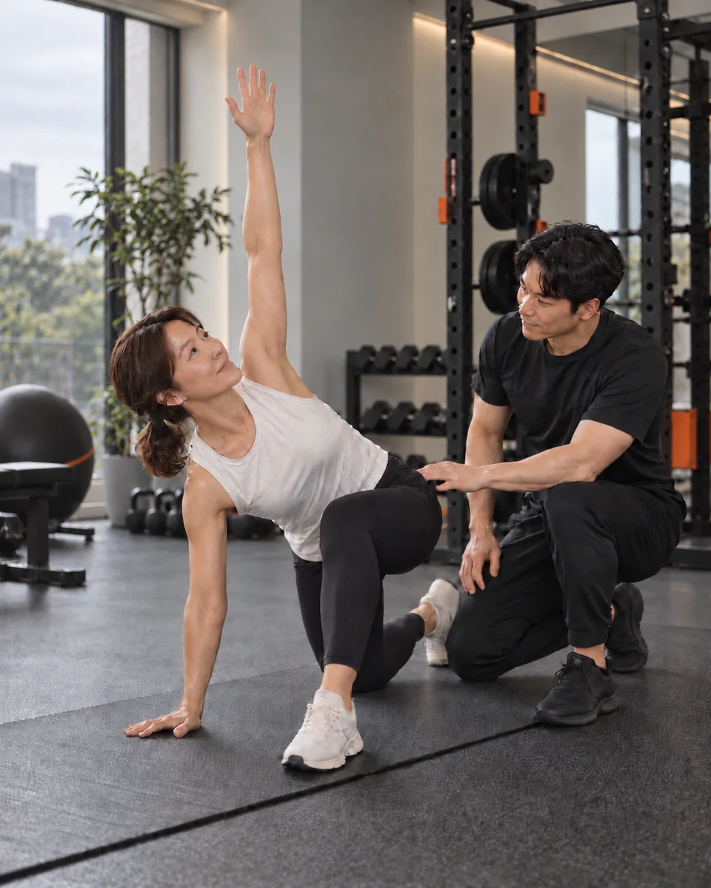

오래 앉아 있다 일어나면 허리가 뻣뻣하다.
모티브짐 / BODY RESET PT
SEONGBOK BODY RESET PT
굳고 불편한 몸,
다시 편하게 움직이기 위한 PT.
오래 앉아 일한 뒤 목과 어깨가 뻣뻣하거나, 허리가 불편해 운동을 시작하기 망설여지는 분을 위한 1:1 PT입니다. 무리한 동작부터 시키기보다 현재 가능한 움직임을 확인하고, 가동성과 기초 근력을 차근차근 다룹니다.

프로그램 이해를 돕기 위한 연출 이미지DAILY MOVEMENT CHECK
참고 버티기보다,
움직임을 다시 볼 때입니다.
불편한 부위 하나만으로 몸의 상태를 단정할 수는 없습니다. 다만 반복되는 생활 속 불편 때문에 활동량이 줄고 운동 시작이 어려워졌다면, 현재 움직임과 운동 가능 범위를 먼저 확인할 필요가 있습니다.
컴퓨터 작업이나 운전 뒤 목과 어깨가 무겁다.
팔을 위로 올리거나 뒤로 돌리는 동작이 불편하다.
운동을 하면 개운하기보다 더 지치거나 불편해진다.
의학적 치료 이후 운동을 어떻게 재개해야 할지 막막하다.
쉬는 시간이 길어지며 몸이 예전보다 굳었다고 느낀다.

START FROM YOUR LEVEL
현재 가능한 움직임이 수업의 출발점입니다.
강한 동작을 먼저 시키지 않습니다. 생활에서 부담되는 움직임과 편하게 가능한 범위를 살피고, 반복할 수 있는 기본 동작부터 운동의 기준을 잡습니다.
사진은 모티브짐 실제 운동 공간입니다.
 모티브짐 실제 공간
모티브짐 실제 공간MOVEMENT AS A WHOLE
불편한 곳만이 아니라,
움직임의 연결을 봅니다.
목·어깨·허리는 서로 떨어져 움직이지 않습니다. 앉는 자세, 호흡, 몸통의 안정성, 고관절과 어깨의 움직임이 함께 영향을 줄 수 있습니다.
모티브짐은 특정 부위를 치료한다고 말하기보다, 회원이 실제로 어려워하는 동작과 현재 가능한 범위를 확인해 운동 순서와 강도를 설계합니다.
모티브짐의 운동 지도는 의료적 진단이나 치료를 대신하지 않습니다. 갑작스럽거나 심한 통증, 저림, 근력 저하 등 의학적 판단이 필요한 증상이 있다면 의료기관 상담을 먼저 권합니다.
FOUR FOUNDATIONS
BODY RESET PT가 다루는
네 가지 기준.
한 번에 많은 동작을 익히기보다 지금의 움직임을 기준으로 시작합니다. 편하게 반복할 수 있는 범위에서 가동성과 기초 근력을 쌓고, 생활과 개인 운동으로 연결합니다.
현재 움직임 확인
서기, 앉기, 팔 올리기처럼 생활에서 자주 쓰는 동작으로 편한 범위와 부담되는 지점을 확인합니다.
움직일 수 있는 범위
억지로 늘리기보다 호흡과 부드러운 반복 동작으로 편하게 움직일 수 있는 범위를 찾아갑니다.
기초 근력
몸통과 엉덩이, 등처럼 일상 움직임을 지지하는 부위부터 현재 수준에 맞춰 강화합니다.
지속 가능한 습관
수업에서 익힌 동작을 생활과 개인 운동에 연결해 무리 없이 이어갈 수 있도록 구성합니다.
HOW WE BEGIN
처음이라도
순서대로 시작합니다.
오래 쉬었거나 운동할 때 불편했던 경험이 있다면, 강도보다 출발점을 잘 정하는 것이 먼저입니다. 수업마다 몸의 반응을 확인하고 동작과 강도를 조정합니다.
무료상담
네이버 톡톡으로 불편한 동작, 운동 경험과 원하는 변화를 먼저 듣습니다.
현재 움직임 확인
생활에서 자주 사용하는 기본 동작으로 가능한 범위와 시작점을 찾습니다.
1:1 운동
가동성, 기초 근력과 생활 동작을 현재 수준에 맞춰 단계적으로 진행합니다.
과정 조정
수업 중 몸의 반응과 수행 기록에 따라 반복 횟수, 무게와 동작 범위를 조정합니다.
MOVEMENT CHECK
무리한 테스트보다, 현재 가능한 움직임부터 봅니다.
기본 동작과 수업 중 반응을 살펴 개인별 시작점을 정하고 다음 운동의 범위와 강도를 조정합니다.
사진은 모티브짐 실제 운동 공간입니다.
WHY MOTIVE GYM
일상에 필요한 움직임부터
차근차근 만들어갑니다.
모티브짐은 고객님의 이야기를 듣고 현재 움직임과 체력을 확인한 뒤, 몸에 맞는 운동의 출발점을 찾습니다.
불편한 부분과 생활 방식, 운동 경험을 함께 살펴 무리하지 않는 범위에서 기초 움직임과 근력을 쌓습니다. 몸의 반응에 맞춰 계획을 조정하며 오래 이어갈 수 있도록 돕겠습니다.
움직임과 컨디션 확인
개인에 맞춘 운동 계획
꾸준한 기록과 조정
BODY RESET PT FAQ
시작 전에
많이 묻는 질문.
목·허리·어깨가 불편해도 운동할 수 있나요?
불편함의 정도와 움직임을 먼저 확인한 뒤 무리하지 않는 범위에서 진행합니다. 증상이 심하거나 의학적 판단이 필요한 경우에는 의료기관 상담을 먼저 권합니다.
병원 검사에서는 큰 이상이 없다고 했는데 계속 불편합니다.
검사 결과만으로 운동 내용을 정하지 않습니다. 어떤 생활 동작에서 불편한지, 어느 범위까지 편하게 움직일 수 있는지를 확인해 운동을 구성합니다. 원인을 진단하거나 치료하는 프로그램은 아닙니다.
재활 운동과 같은 수업인가요?
의료기관의 재활 치료가 아닌 개인 운동 수업입니다. 치료가 끝난 뒤 운동 재개가 막막하거나 오랜 휴식 후 다시 움직이고 싶은 분에게 현재 수준에 맞는 운동을 안내합니다.
운동을 거의 해본 적이 없어도 괜찮나요?
가능합니다. 복잡하거나 강한 동작부터 시작하지 않고 호흡, 기본 움직임, 기초 근력 순으로 진행합니다.
수업 강도는 어떻게 정하나요?
첫 수업과 매 수업에서 몸의 반응을 확인하고 반복 횟수, 무게, 동작 범위를 조정합니다.
무료상담에는 무엇이 포함되나요?
네이버 톡톡으로 현재 느끼는 불편, 운동 경험, 원하는 목표를 간단히 남기면 적합한 시작 방법과 방문 절차를 안내합니다. 무료상담은 PT 수업이나 의료 상담을 포함하지 않습니다.
START WITH MOTIVE
운동을 시작해도 될지부터
편하게 물어보세요.
현재 느끼는 불편과 운동 경험을 네이버 톡톡으로 남겨주세요.
몸을 억지로 몰아붙이지 않고, 지금 가능한 움직임부터 시작할 방법을 안내합니다.
무료상담은 PT 수업이나 의료 상담을 포함하지 않습니다.